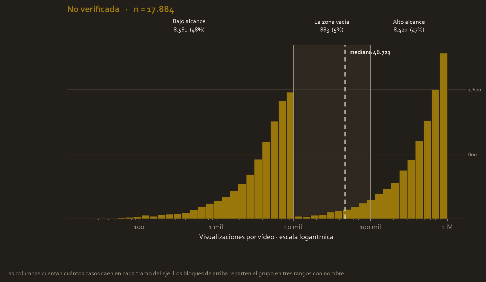
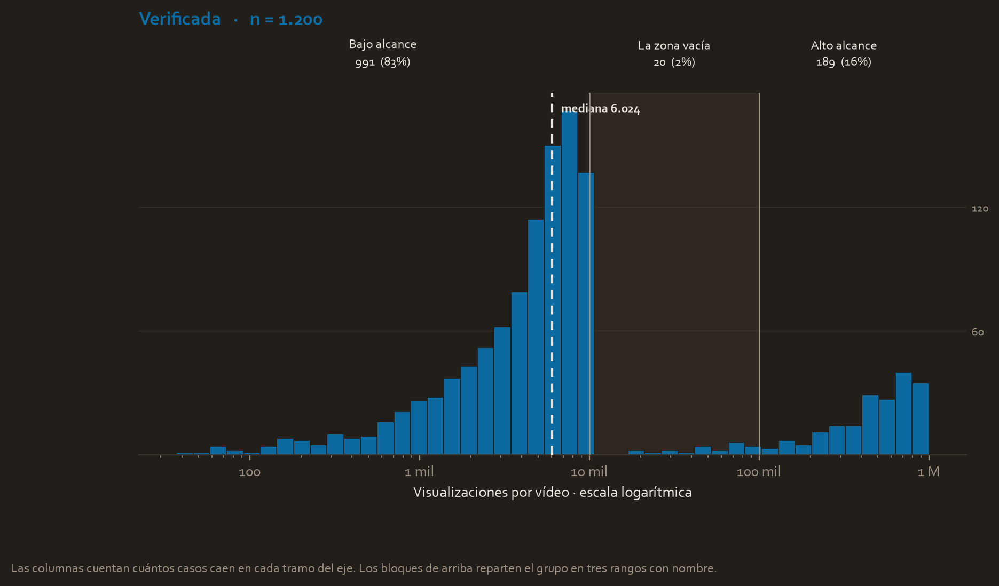
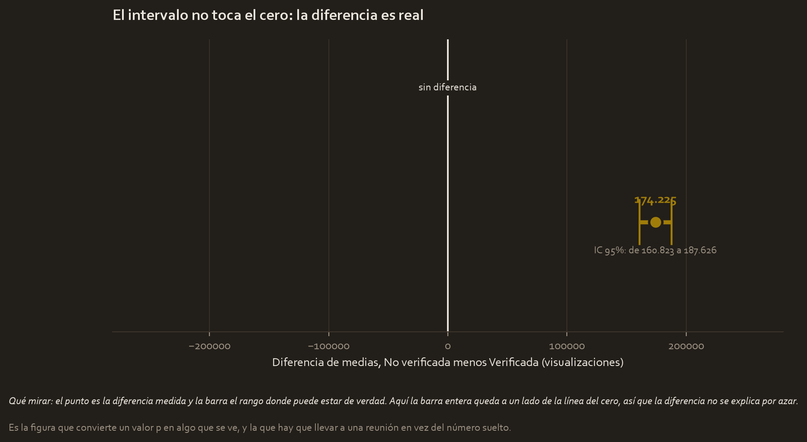

El encargo
Trabajas como analista de datos para TikTok. La plataforma recibe cada día miles de reportes de usuarios que marcan vídeos como problemáticos, y el equipo humano de moderación no da abasto para revisarlos todos.
La idea es construir a futuro un sistema que priorice automáticamente qué vídeos revisar primero. Pero antes de construir nada, el equipo necesita entender el terreno: ¿qué distingue a unos vídeos de otros en cuanto a alcance? Concretamente, hay una sospecha sobre las cuentas verificadas, y hay que comprobarla con datos antes de diseñar nada encima de ella.
La pregunta
¿Los vídeos publicados por cuentas verificadas reciben un número de visualizaciones distinto al de los vídeos de cuentas no verificadas?
Parece una pregunta trivial: se calculan los dos promedios y se compara cuál es más alto. Pero un promedio salido de una muestra no demuestra nada por sí solo: podría ser casualidad de esta muestra concreta. Para afirmar que la diferencia es real hace falta una prueba de hipótesis, que es justo lo que enseña el módulo 5 de este curso.
Las hipótesis
Antes de tocar el dato se escriben las dos afirmaciones que compiten. Esto se hace primero: si se formulan después de ver los resultados, la prueba pierde validez.
- Hipótesis nula (H₀). La postura conservadora, la de "aquí no pasa nada": no existe diferencia entre el número medio de visualizaciones de los vídeos de cuentas verificadas y no verificadas.
- Hipótesis alternativa (Hₐ). Lo que se sospecha: sí existe una diferencia real.
El nivel de significancia se fija en α = 0,05. Significa que se acepta como máximo un 5 % de probabilidad de gritar "¡hay diferencia!" cuando en realidad no la había.
Los datos
- 19.084 vídeos analizados en total.
- La variable que se mide (la métrica objetivo) es
video_view_count: cuántas veces se vio cada vídeo. - La variable que separa los grupos es
verified_status: verificada o no verificada.
Y aquí aparece el primer hallazgo importante, antes incluso de empezar:
| Grupo | Cuántos vídeos |
|---|---|
| No verificadas | 17.884 |
| Verificadas | 1.200 |
Los grupos están muy desequilibrados: por cada vídeo de cuenta verificada hay casi 15 de cuentas normales. Eso no invalida el análisis, pero condiciona qué prueba se puede usar y hay que tenerlo presente hasta el final.
Lo que mostró la exploración
Antes de cualquier prueba estadística hay que mirar los datos. Un panel por grupo, y qué enseña cada uno.

Panel 1. Las cuentas no verificadas
Las columnas cuentan cuántos vídeos caen en cada tramo de visualizaciones, y el eje va en escala logarítmica porque los valores van de unas pocas visualizaciones a más de un millón.
Los tres bloques de arriba parten el grupo en rangos con nombre, y ahí está el hallazgo: el 48 % de estos vídeos casi no se ve y el 47 % se ve muchísimo, con apenas un 5 % en medio. No es una montaña con una cola larga, son dos montañas separadas por un vacío.
Y fíjate dónde cae la mediana, en 46.723: justo en el vacío. Solo el 1,1 % de los vídeos de este grupo está a menos de un 20 % de ese valor. Es un estadístico que no describe a casi ningún vídeo real.

Panel 2. Las cuentas verificadas
El mismo eje, el mismo reparto en tres rangos, y una historia distinta. Aquí el 83 % de los vídeos vive en el tramo de bajo alcance y solo el 16 % llega al de alto alcance.
Ojo con una cosa antes de comparar: la escala vertical de este panel no es la del anterior, porque este grupo tiene 1.200 vídeos y el otro 17.884. Por eso las figuras van separadas, para que cada una se lea con su propia escala sin que la más pequeña quede aplastada.
Lo que se ve al poner los dos repartos en una tabla
| Tramo | No verificadas | Verificadas |
|---|---|---|
| Bajo alcance (hasta 10 mil) | 48,0 % | 82,6 % |
| La zona vacía (10 mil a 100 mil) | 4,9 % | 1,7 % |
| Alto alcance (más de 100 mil) | 47,1 % | 15,8 % |
Aquí está la conclusión de verdad, y es más precisa que comparar medias. Los dos grupos tienen las mismas dos poblaciones; lo que cambia es qué fracción de cada grupo llega a la población de alto alcance: casi la mitad en las cuentas normales, uno de cada seis en las verificadas.
Dicho en lenguaje de producto: no es que un vídeo de cuenta verificada se vea menos, es que tiene bastante menos probabilidad de despegar.

Cómo se lee esta figura
El punto es la diferencia observada entre los dos grupos y la barra es su intervalo de confianza del 95 %, el rango donde puede estar la diferencia real. La línea vertical marca el cero, la posición de "no hay diferencia".
Aquí la barra está lejísimos del cero, y esa distancia es todo el resultado del análisis en una sola imagen. Compárala con la misma figura del caso de Waze, donde la barra atraviesa el cero: son dos respuestas opuestas dibujadas de la misma forma.
| Grupo | Media de visualizaciones | Desviación estándar |
|---|---|---|
| No verificadas | 265.664 | 325.682 |
| Verificadas | 91.439 | 221.139 |
Los vídeos de cuentas no verificadas reciben de media casi tres veces más visualizaciones, un 65,6 % de diferencia relativa. Es lo contrario de lo que esperaría la intuición, y por eso merece una prueba formal antes de creérselo.
El hallazgo secundario, que resultó más fuerte
Hay una segunda variable en el dataset: si el vídeo contiene una reclamación o una opinión. El contraste es de otro orden:
| Tipo de vídeo | Media de visualizaciones |
|---|---|
| Reclamación | 501.029 |
| Opinión | 4.956 |
Unas 100 veces más visualizaciones. Este hallazgo secundario resultó mucho más potente que el principal, y es el que de verdad sirve para el objetivo original de priorizar la moderación.
La prueba, y por qué esta prueba
Se compara la media de dos grupos independientes, así que la familia correcta es la prueba t de dos muestras. Pero dentro de esa familia hay que elegir, y la elección se justifica comprobando un supuesto.
Primero se comprueba si las varianzas son iguales
La prueba t clásica (de Student) asume que ambos grupos tienen la misma dispersión. Eso se verifica con el test de Levene:
Levene: estadístico = 392.01 p = 2.22e-86
Ese valor p es un número con 85 ceros antes del primer decimal significativo. Es aplastantemente menor que 0,05, así que se concluye que las varianzas no son iguales, cosa que ya se veía en la tabla de arriba: 325.682 frente a 221.139.
Por eso se usa Welch, no Student
Como el supuesto de varianzas iguales no se cumple, se usa la prueba t de Welch (equal_var=False), que no lo exige. Usar Student aquí habría dado un resultado con una precisión fingida.
¿Y el supuesto de normalidad, si las distribuciones estaban tan sesgadas? Aquí entra el teorema del límite central del módulo 3: con 17.884 y 1.200 observaciones, la distribución de las medias es aproximadamente normal aunque los datos individuales no lo sean. Por eso la prueba es válida pese al sesgo que muestran los dos paneles.
El resultado, traducido
Welch t = 25.4994 p = 2.61e-120 IC 95% de la diferencia = [-187.626 , -160.823] Cohen's d = -0.544 Mann-Whitney U: p = 1.93e-91
Y esto es lo que significa cada línea:
- t = 25,50. Las medias de los dos grupos están separadas por unas 25 unidades de error estándar. Como referencia, a partir de 2 ya se suele considerar una separación notable: 25 es enorme.
- p = 2,61 × 10⁻¹²⁰. La probabilidad de ver una diferencia así de grande **si en realidad no hubiera ninguna diferencia**. Escrito en decimales sería un 0 seguido de 119 ceros antes del 261. Es, a efectos prácticos, cero. Se rechaza H₀.
- Intervalo de confianza 95 % = [−187.626, −160.823]. La diferencia real está en algún punto de ese rango. Fíjate en que no incluye el cero: es otra forma de ver el mismo resultado, y conecta directamente con el módulo 4.
- Cohen's d = −0,544. El tamaño del efecto. Es la pieza que impide confundir "significativo" con "importante": un valor alrededor de 0,5 se considera un efecto medio. Es decir, la diferencia es realísima, pero moderada en magnitud, no colosal.
- Mann-Whitney U: p = 1,93 × 10⁻⁹¹. Una segunda prueba, de refuerzo, que compara rangos en vez de medias y no asume ninguna forma de distribución. Llega a la misma conclusión, lo cual descarta que el resultado fuera un artefacto del sesgo o de los atípicos.
Qué se decide con esto
La diferencia es real: los vídeos de cuentas no verificadas reciben significativamente más visualizaciones, con un efecto de tamaño medio.
Pero la recomendación operativa nace del hallazgo secundario, que resultó mucho más potente: la variable que de verdad predice el alcance de un vídeo no es el estado de verificación, sino si el vídeo contiene una reclamación (501.029 frente a 4.956 visualizaciones de media).
Traducido a acción: un futuro sistema de priorización de moderación debería apoyarse en el claim_status como señal principal, no en verified_status. Este análisis ha servido para descartar una hipótesis intuitiva y encontrar una señal mejor, que es exactamente para lo que sirve una prueba de hipótesis.
Limitaciones
- Los grupos están muy desequilibrados (17.884 frente a 1.200). Welch lo maneja correctamente, pero la estimación del grupo verificado descansa sobre muchos menos datos y por tanto es menos precisa.
- Se detectó un desequilibrio de asignación (SRM): la comprobación dio
chi² = 14.586conp ≈ 0. En un experimento A/B de verdad esto sería una bandera roja que obligaría a revisar el mecanismo de asignación. Aquí es esperable, porque los grupos no se asignaron al azar: son una característica preexistente de las cuentas. - Esto es un estudio observacional, no un experimento. Se puede afirmar que existe asociación entre verificación y visualizaciones, pero no que la verificación cause menos visualizaciones. Podría haber factores de fondo (tipo de contenido, antigüedad de la cuenta, comportamiento del algoritmo) que expliquen ambas cosas a la vez.
- No se eliminaron los valores atípicos, decisión deliberada y correcta para este dominio, pero implica que las medias están influidas por los vídeos virales. La validación con Mann-Whitney es precisamente la defensa frente a esa objeción.
- La distribución es bimodal, y eso debilita la comparación de medias. Cuando los datos tienen dos poblaciones separadas, la media cae entre ambas y no representa a ninguna. La prueba sigue siendo válida (el teorema del límite central no exige normalidad), pero la pregunta interesante deja de ser "¿cuál grupo tiene más visualizaciones de media?" y pasa a ser "¿qué proporción de cada grupo cae en la población de alto alcance?". Ese análisis no está hecho y sería el siguiente paso natural.
- El vacío entre las dos poblaciones es sospechoso. Un corte tan limpio alrededor de las 10.000 visualizaciones puede ser un efecto real del algoritmo de distribución, o un artefacto de cómo se generó este dataset de enseñanza. Con los datos disponibles no se puede distinguir entre las dos cosas, y conviene decirlo antes de construir nada encima.
Material completo
Todo lo anterior sale de estos archivos, que siguen en tu carpeta del curso tal y como estaban.
Guía extendida
- tiktok_project_cheatsheet.html 05_cheatsheets/tiktok_project_cheatsheet.html 29.0 KB
- executive_summary.html 04_reports/executive_summary.html 11.8 KB
Informes y notas
- ab_test_plan_pace.md 04_reports/ab_test_plan_pace.md 3.1 KB
- executive_summary.md 04_reports/executive_summary.md 2.1 KB
- stats_summary.json 04_reports/stats_summary.json 2.1 KB
Código
- main_pipeline.py 02_scripts/main_pipeline.py 24.1 KB
- 01_eda_and_diagnostics.py 02_scripts/01_eda_and_diagnostics.py 7.6 KB
- 02_ab_test_execution.py 02_scripts/02_ab_test_execution.py 5.5 KB
Datos
- tiktok_dataset_raw.csv 01_data/tiktok_dataset_raw.csv 2.9 MB
- tiktok_dataset_processed.csv 01_data/tiktok_dataset_processed.csv 3.1 MB
Presentación
- Exemplar_-TikTok-Course-3-executive-summary.pptx Exemplar_-TikTok-Course-3-executive-summary.pptx 5.7 MB